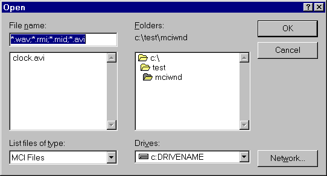

title: Allowing the User to Specify Devices and Files description: Allowing the User to Specify Devices and Files ms.assetid: cc542b56-c66e-4622-b2d1-505d31aab25b keywords:
[The feature associated with this page, MCIWnd Window Class, is a legacy feature. It has been superseded by MediaPlayer. MediaPlayer has been optimized for Windows 10 and Windows 11. Microsoft strongly recommends that new code use MediaPlayer instead of MCIWnd Window Class, when possible. Microsoft suggests that existing code that uses the legacy APIs be rewritten to use the new APIs if possible.]
You can associate a device or file with an existing MCIWnd window by using the MCIWndOpenDialog, MCIWndOpen, and MCIWndOpenInterface macros, and the GetOpenFileNamePreview function.
To let a user of your application select a file to play, use MCIWndOpenDialog. This macro displays the Open dialog box (shown in the following screen shot) for choosing a file and associates the selected file with the current MCIWnd window.

You can let a user of your application select a file to associate with an MCIWnd window and preview that file by using GetOpenFileNamePreview and MCIWndOpen. The GetOpenFileNamePreview function displays the Open dialog box for choosing a file and lets the user preview (play) its contents. When the name of an existing file is specified in the dialog box, GetOpenFileNamePreview provides a small control to let the user preview the contents of the file. You can associate a specified file, selected with GetOpenFileNamePreview or specified in another manner, with an MCIWnd window by using MCIWndOpen.
You can also use MCIWndOpen to specify a device to associate with an MCIWnd window. For example, you can use a device name, such as "CDAudio".
To associate an MCIWnd window with a file interface or data-stream interface to multimedia data, use the MCIWndOpenInterface macro. For more information about file and data-stream interfaces, see AVIFile Functions and Macros.
[!Note]
Before associating a new file or device with an MCIWnd window, MCIWndOpenDialog and MCIWndOpen close any device currently associated with the window. Your application does not need to close any open devices before using these macros.
Â
Â
Â